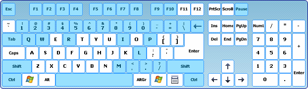

Controls
Taseditor is controlled by mouse and keyboard.
Every operation can be done in several alternative ways (via menu, hotkey or GUI element).
Any action can be done using mouse, but some are faster to do with keyboard. The Manual assumes that one hand of user is holding the mouse and other hand is placed on a side of the keyboard, occasionally holding Shift/Ctrl/Alt or pressing a key combination.
Some actions (e.g. switching "Follow cursor") can be done by mouse only.
Mouse controls
Pointing with mouse
A. Displaying Bookmarks screenshots and descriptions
Hover mouse cursor over the right half of Bookmarks List to see the game screenshot of the bookmarked frame in the movie branch you're pointing at. Optionally there can be a description of the branch under the screenshot.
B. Displaying information of the Bookmark
Hover mouse cursor over an icon of any Bookmark in the Branches Tree to see the information about the Bookmark (real time of creation, bookmarked frame, full timeline, screenshot and description). When you point at a Bookmark that doesn't belong to the timeline of current movie branch, mouse cursor changes to arrow with question mark.
C. Illuminating button symbols in the Piano Roll Header
Hover mouse cursor over a button symbol in the Piano Roll Header to see if you can change the movie by clicking this symbol. When some rows of Piano Roll are selected, symbols in the Header will illuminate on mouse hover.
Left mouse button
The main button.
A. Standard Windows actions
Most of GUI elements of TAS Editor window are controlled the same way as in other Windows applications.
B. Moving Playback cursor
Click on any row in the "Icons" column of Piano Roll to send Playback cursor to the frame pointed. If you hold the left mouse button, you can drag the Playback cursor up and down. This way you can even move Playback cursor into frames outside currently visible area of the movie. Just try dragging the cursor below or above Piano Roll – the farther you lead the mouse, the faster will be scrolling and Playback rewinding.
C. Selecting rows in Piano Roll
Click on a frame number in the "Frame#" column of Piano Roll to select this frame and remove selection from other frames (if there was any selection before). If you hold the left mouse button, you can stretch the selection by moving mouse up or down.
If you need to append new selection to an already existing selection, hold Ctrl while clicking on a frame number. This way you can select several non-overlapping segments. Also this way you can remove some parts of existing Selection, just hold Ctrl while clicking on a selected frame.
If you hold Shift instead of Ctrl, the click will select a region of frames starting from the beginning of previous Selection.
If you hold Alt, the click will select rows using current Pattern.
D. Setting/unsetting Input in Piano Roll
Point mouse cursor at needed cell of Input (find crossing point of needed frame row and needed button column) and press left mouse button. The Input in this cell changes at the moment you press the button. Empty cell will become occupied and vice versa.
The row containing this cell will become selected, and other Piano Roll rows will become unselected. This feature ensures that Selection cursor always appears in the context of Input editing.
If you hold the left mouse button, you can draw or erase Input in other cells of Piano Roll by moving mouse cursor over them. Drawing starts when you click on an empty cell, erasing starts by clicking on an occupied cell.
If you hold Shift while clicking on a cell, the Input change will apply to all frames from Selection cursor to the row containing the cell. Selection cursor won't move this time.
If you hold Alt instead of Shift. the click will set Input (from Selection cursor to the row containing the cell) as on current Pattern. Selection cursor won't move this time.
E. Setting/unsetting Input using the Header of Piano Roll
Click on a button symbol in the Piano Roll Header to change the Input of this button in selected frames. If no frames are selected, nothing will happen. If in some of the selected frames the button in not set, the click will set the button in all selected frames. If the button is set in all selected frames, the click will unset the button in all selected frames.
If you hold Alt while clicking on a button symbol, the click will the button Input in selected frames as on current Pattern.
If you click on the "Frame#" label, the click will apply to Markers instead of Input.
F. Creating and moving Markers
Double-click on a frame number in Piano Roll to set Marker to this frame. If you hold the left mouse button, you can drag the Marker freely. Release the button to leave the Marker at the frame number it was held over. This way you can move Markers from place to place. If you release the Marker over Input columns, the dragging will be cancelled, and the Marker will return to the frame it was picked from. If you release the Marker over another Marker, those two Markers will switch places.
If you release the Marker outside Piano Roll, this Marker will be dumped. Thus, to remove a Marker, double-click on it and drag it somewhere outside TAS Editor window.
G. Entering/exiting Note editing mode
Click on the upper or the lower edit field to start editing Note text displayed in this field at the moment.
To finish editing (and save changes) click on anything outside the edit field.
H. Controlling the Bookmarks List
Click on a frame number in Bookmarks List (on the left side of the list) to send Playback cursor to the frame.
Click on a time indicator in Bookmarks List (on the right side of the list) to restore movie state saved into the Bookmark and send Playback cursor to the bookmarked frame.
Those operations fire on the left button release.
I. Controlling the Branches Tree
Click on icon of a Bookmark to send Playback cursor to the bookmarked frame.
Double-click on icon of a Bookmark to restore movie state saved into the Bookmark and send Playback cursor to the bookmarked frame.
Those operations fire on the left button press.
J. Controlling the History Log
Click on any row of the History Log to restore movie state to the point of time when the Log record was created.
Right mouse button
A. Moving Playback cursor with mouse wheel
Hold right button and roll the mouse wheel up or down to move Playback cursor respectively.
Mouse cursor can be anywhere over the TAS Editor window or emulator main window.
B. Scrolling the Piano Roll
Place mouse cursor over the Piano Roll, hold right button and move mouse cursor anywhere outside the Piano Roll to scroll visible area to the side. This is especially useful for horizontal scrolling, because using scrollbar would be too slow.
C. Setting a Bookmark
Right-click on a row of the Bookmarks List to set the Bookmark to the frame where Playback cursor currently is.
Alternatively, right-click on icon of a Bookmark in the Branches Tree to set the Bookmark to the frame where Playback cursor currently is.
Those operations fire on the right button release.
D. Context menu
Right-click on a frame number of any selected frame in the Piano Roll to bring the context menu containing the following items:
Scrollbars and Note editing fields also have their own context menus.
Middle mouse button
The middle mouse button serves one major role – to pause and unpause emulator, no matter where mouse cursor is The button fires on button press.
When emulator is paused, pressing the middle mouse button will unpause it (same as pressing Pause hotkey). Moreover, if there is the green arrow outside Greenzone in Piano Roll, the middle-click will launch seeking to the frame with the green arrow (same as pressing Restore Playback hotkey).
If you hold Shift while mid-clicking, this will launch seeking to the nearest Marker.
If you hold Ctrl while mid-clicking, this will either launch seeking to Selection cursor (if it's below Playback cursor) or re-watch the movie segment starting from Selection cursor (if it's above Playback cursor).
When emulator is unpaused, pressing the middle mouse button will pause it (same as pressing Pause hotkey).
Usually the middle mouse button is the mouse wheel.
Mouse wheel
The wheel can be rolled up and down with different speed. When you need precision, roll the wheel slowly. When you need speed, roll the wheel quickly.
A. Scrolling the Piano Roll or History Log
When mouse cursor is over the History Log, roll the mouse wheel to scroll visible area of the History Log.
When mouse cursor is anywhere else, roll the mouse wheel to scroll visible area of the Piano Roll.
B. Moving Playback cursor
Hold right mouse button and roll the mouse wheel up or down to move Playback cursor respectively.
If you want to always see the Playback cursor position in Piano Roll, check the "Follow cursor" checkbox in the Playback section of TAS Editor window.
C. Jumping on Markers
This is similar to pressing << and >> buttons or using Ctrl/Shift + Page Up/Page Down hotkeys.
Hold the Shift key and roll the wheel to make jumps with Playback cursor. The Piano Roll will follow it if the "Follow cursor" checkbox is checked.
Hold the Ctrl key and roll the wheel to make jumps with Selection cursor. The Piano Roll will follow it automatically.
D. Crossing gaps
Point mouse cursor to any member of a long column of buttonpresses or to an empty cell among other empty cells in its neighborhood, then hold the Alt key and roll the wheel up or down to scroll the Piano Roll in such a manner that mouse cursor immediately appears before the upper end or after the lower end of the column / emptiness.
This allows you to quickly navigate among long sequences of Input.
The same approach can be used to find previous/next Markers (when mouse cursor is over the column with frame numbers) and Bookmarks (when it's over the icons column).
Keyboard controls

Modifiers (Shift, Ctrl, Alt)
When you hold one of these keys the functions of left mouse button and mouse wheel change.
If you tap the Shift key twice in a row, the Piano Roll will automatically scroll to Playback cursor.
If you tap the Ctrl key twice in a row, the Piano Roll will automatically scroll to Selection cursor.
When you're drawing/erasing Input, hold Shift key to remove the "single-column" confinement.
Accelerator hotkeys
These are key combinations typical for many Windows applications. You cannot redefine those combinations. In this documentation they are highlighted with red color.

Ctrl + S = save project to disk
Ctrl + Z = undo (step back in History Log)
Ctrl + Y = redo (step forward in History Log)
Ctrl + Q = restore previous Selection (Selection undo)
Ctrl + W = restore next Selection (Selection redo)
Ctrl + A = select all frames between two Markers surrounding Selection cursor
Ctrl + B = reselect frames that contain Input that was copied to the Clipboard
Ctrl + C = copy selected Input to the Clipboard (Copy)
Ctrl + X = copy selected Input to the Clipboard and then clear selected frames (Cut)
Ctrl + V = paste Input from the Clipboard to Selection cursor (Paste)
Ctrl + Shift + V = insert Input from the Clipboard to Selection cursor (PasteInsert)
Delete = clear selected frames
Ctrl + Delete = remove selected frames from the movie
Insert = insert given number of blank frames before Selection cursor
Ctrl + Insert = clone selected frames
Ctrl + Shift + Insert = insert blank frames before selected frames
Ctrl + F = bring Find Note dialog
Ctrl + PageUp / Ctrl + PageDown = jump on Markers with Selection cursor
Ctrl + Home / Ctrl + End = move Selection to the beginning / to the end of the movie
Ctrl + Up / Ctrl + Down = transpose Selection 1 frame up / down
Ctrl + Right / Ctrl + Left = scroll Piano Roll right / left
Shift + PageUp / Shift + PageDown = jump on Markers with Playback cursor
Shift + Home / Shift + End = send Playback cursor to the beginning / to the end of the movie
Shift + Up / Shift + Down = move Playback cursor 1 frame up / down
Shift + Right / Shift + Left = scroll Piano Roll right / left
PageUp / PageDown = scroll Piano Roll up / down
Home / End = scroll Piano Roll to the beginning / to the end of the movie
FCEUX hotkeys
Emulator allows to map keyboard keys to different functions, see the Program Customization chapter. Keys that are already mapped by default are highlighted by light-blue color in this documentation.

Ctrl + F1 = reload last project
Pause = pause/unpause emulator
Esc = cancel seeking
Spacebar = restore Playback cursor position (launch seeking to the green arrow)
Ctrl + Spacebar = toggle "Auto-restore last position" checkbox
\ (backslash) = Frame Advance (emulate 1 frame)
Backspace = Frame Rewind (move Playback cursor 1 frame up)
Shift + R = play movie from the beginning
- (white "minus") = decrease emulation speed
= (white "plus") = increase emulation speed
Tab = Turbo speed (applies as long as the key is being held)
F1-F10 = load movie branch from respective Bookmark slot (1-10)
1-0 = jump to the frame of the Bookmark (1-10)
Shift + F1-F10 = set Bookmark (1-10)
I = set currently selected Bookmark (deprecated)
P = load movie branch from currently selected Bookmark (deprecated)
M = show/hide rerecord counter
, (comma) = switch Input display
. (dot) = show/hide frame counter
/ (slash) = show/hide lag counter
Shift + L = reload current Lua script
Q = toggle Recording mode
W = switch current multitracking mode
Ctrl + R = invoke Reset command
Full list of FCEUX hotkeys that can be used when Taseditor is engaged:
Other FCEUX hotkeys will not work when Taseditor is running, for more details see Mistake-proofing.
Virtual gamepad
Emulator also allows to map keyboard keys to buttons of emulated console. You can use these keys for Input Recording and for changing Input in Selection, see the Program Customization chapter.
By default these keys are mapped to Player 1 buttons:
D – B
F – A
Enter – Start
S – Select
Keypad up – Up
Keypad left – Left
Keypad down – Down
Keypad right – Right
When you need to input hardware commands, use FCEUX menu or hotkeys:
These commands work only when Recording mode is on. And after invoking a command you need to advance at least 1 frame to actually activate the command and insert it into the movie.
Since in TAS Editor 1.0 the Piano Roll doesn't have columns for displaying hardware commands (they are rarely used), it's recommended to set Markers to frames where a command was inserted.
Controls in Note editing mode
When you enter Note editing mode, the keyboard is used for typing the text.
1. Accelerator hotkeys do not work.
Ctrl + A – select all text of the Note
Ctrl + Z – undo/redo the last change in the text
Ctrl + X, Ctrl + C, Ctrl + V – text copy/cut/paste
2. FCEUX hotkeys do not work.
Backspace – delete previous symbol
Esc – exit Note editing mode without saving any changes
Tab – toggle between upper and lower Note editing field
3. Virtual gamepad keys do not work. Note: they will work if you check the Config -> Enable -> Background Input in FCEUX menu, so it's not recommended to enable the feature.
4. Mouse controls are the same as usual. Any click outside the text edit field (except for mid-clicks) will exit Note editing mode and save text changes. Also, if the Playback cursor or Selection cursor move away from the Marker while you're editing its Note, the text changes will be saved and you'll begin editing another Marker's Note.
Created with the Personal Edition of HelpNDoc: Full-featured Kindle eBooks generator